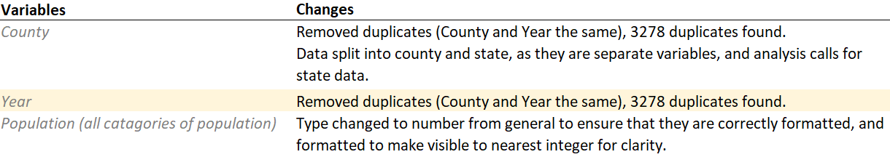
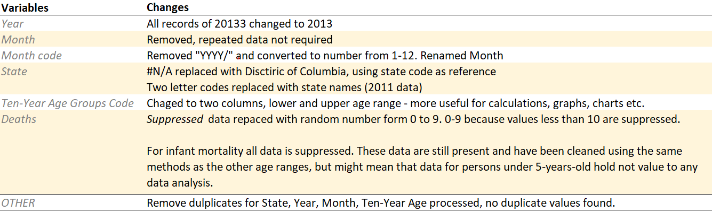
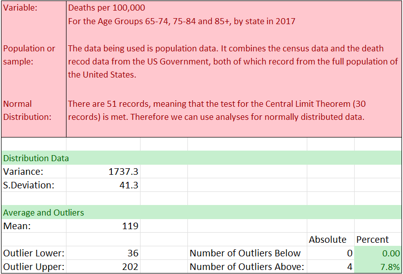

Influenza Epidemiology
Locum Staffing Strategy
Overview
Motivation
The United States has an influenza season where more people than usual suffer from the flu. Some people, particularly those in vulnerable populations, develop serious complications and end up in the hospital. Hospitals and clinics need additional staff to adequately treat these extra patients. The medical staffing agency provides this temporary staff.
Objective
Determine when to send staff, and how many, to each state. The agency covers all hospitals in each of the 50 states of the United States plus Washinton D.C., and the project will plan for the upcoming influenza season.
TOOLS


Excel, Tableau

Loom
SKILLS
- Data Cleaning, Profiling and Transformation
- Statistical Analysis
- Hypothesis Testing
- Visualisations and Presentation
Data
The following dataset were sourced, and then profiled and cleaned in order to conduct the analysis:Data Processing
Cleaning
Duplicates
The influenza deaths data contained the number of deaths with influenza recorded as the primary cause of death in each US county from 2009 to 2017. Therfore there should be one entry for each county in each year. Running a remove duplicates search on these two variables produced 3,278 duplicates with 25,707 unique values.
Consistency and Completeness
Census Data:  Influenza Deaths Data: Integration
In order to integrate the two data set common variables were required:
- The state and year data match in both data and format. These data were ready for integration without alteration.
- Both have age groupings, but the deaths data has the Age Groups in 10-year ranges, whereas the Census is in 5-year ranges.
To integrate the data a consistent set of age range groups were required. In order to do this the 5-year ranges in the Census were summed to form the equivalent 10-year ranges to the Deaths data.
Furthermore, the Census dataset does not follow tidy data principles, with the Age Group variable being split over numerous columns, therefore a simple
VLOOKUP will not be sufficient to integrate and create
a integrated dataset that conforms to Tidy Data priciples.
The final formula used to integrate the data was a 2D INDEX MATCH, which used the Census array as the index, and
added the relevant values to the Deaths dataset as a new variable.
Analysis
Statistical Analysis
The correlation between the number of Deaths per 100,000 population was compared to the normalised states' populations in the year 2017. To normalise the states' population the state population was divided by the national population. By normalising both death and population data the information was then of comparable magnitudes.
The correlation coefficient was calculated at -0.21. From this we can infer that the mortality rate is negatively impacted by the population of the State. A possible reasons for this could be that there is a lower access to healthcare in less populous regions.
Hypothesis Testing
 Null Hypothesis:
A person aged 65 or over has an equal or lower probability of death from influenza than that of someone under 65.
Null Hypothesis:
A person aged 65 or over has an equal or lower probability of death from influenza than that of someone under 65.Alternative Hypothesis: A person aged 65 or over has a higher probability of death from influenza than that of someone under 65.
Hypothesis Testing: The t-Test run in Excel on the mortality rates (deaths per 100,000) for those under-65 against perople aged 65-and-over produced a t Stat of -15.5. Meaning that the age variable is of high significance to the differences in mortality rate. And this was shown to have over 95% confidence, therefore the Null Hypothesis could be rejected. And, therefore age as deciciding factor for the level of medical staffing is a key consideration.
Recommendations
The following these processes a series of visualisations were created to determine insights. The final recommendations were used to generate an interactive map, that shows the details and needs of individual states, along with a commentry and conclusion to the analysis conducted.